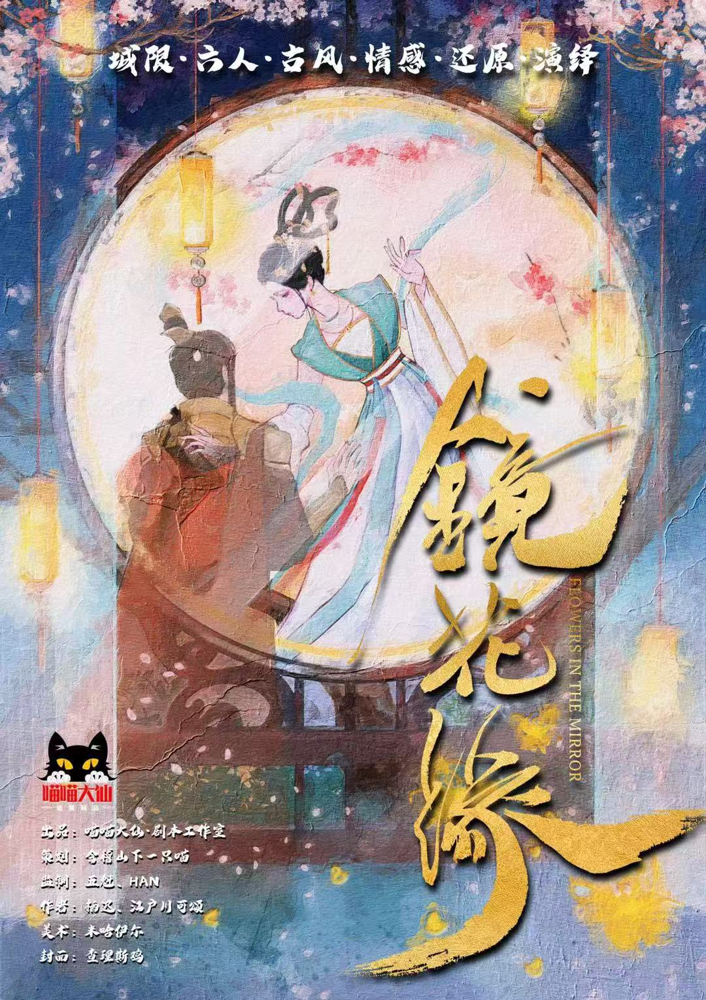
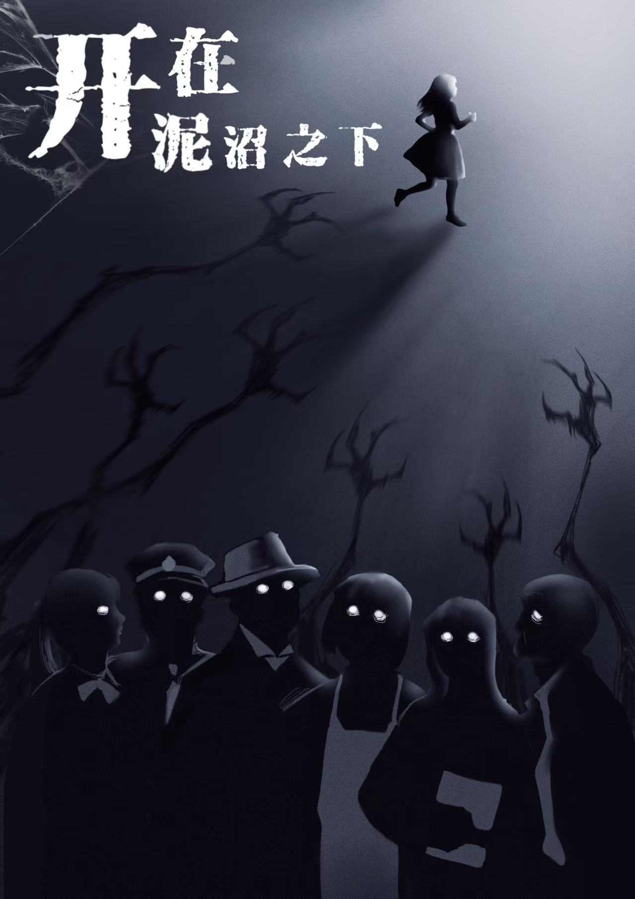
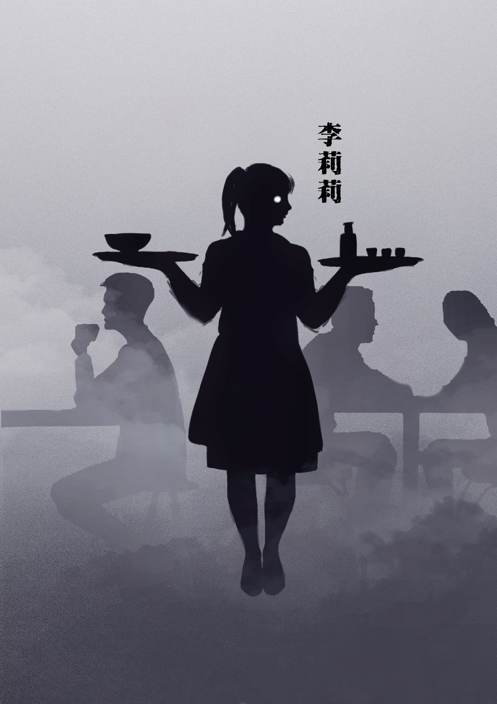
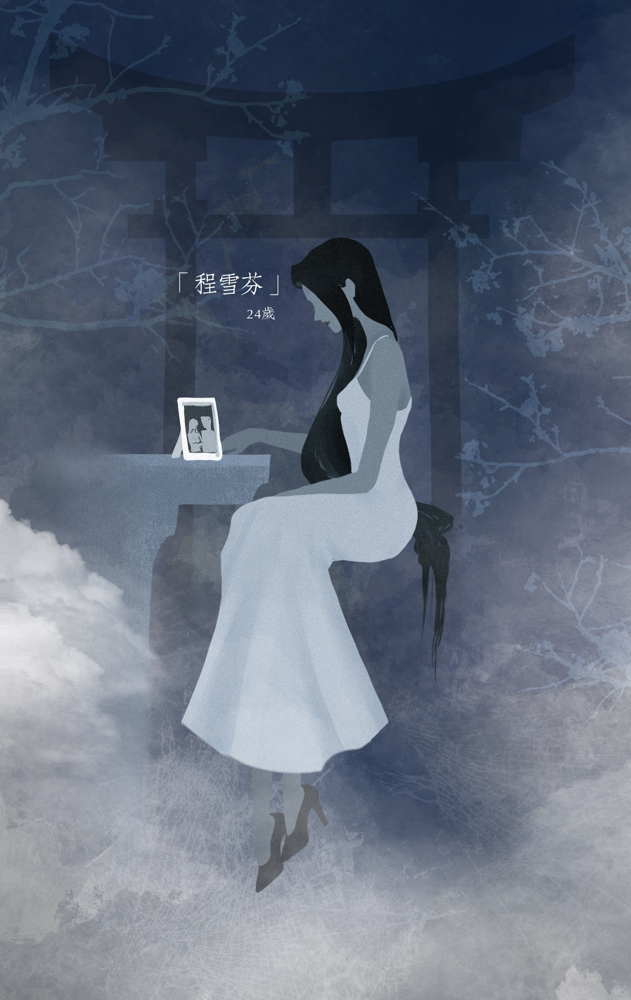
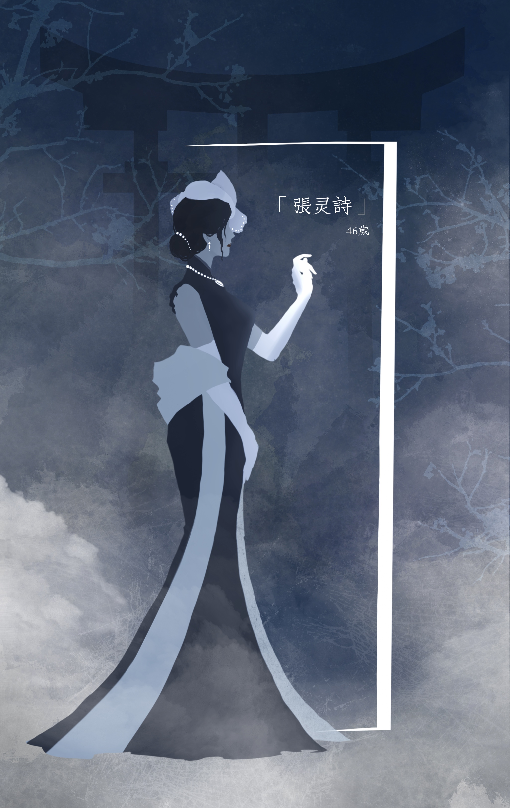
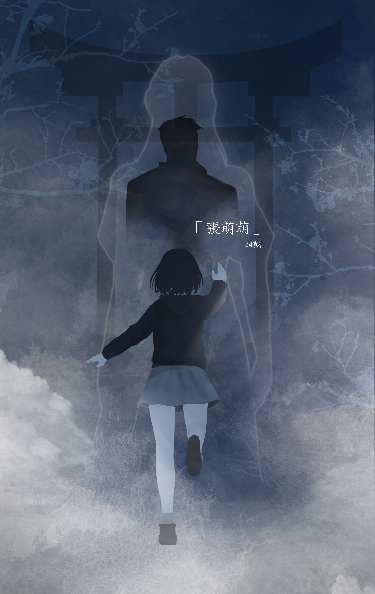
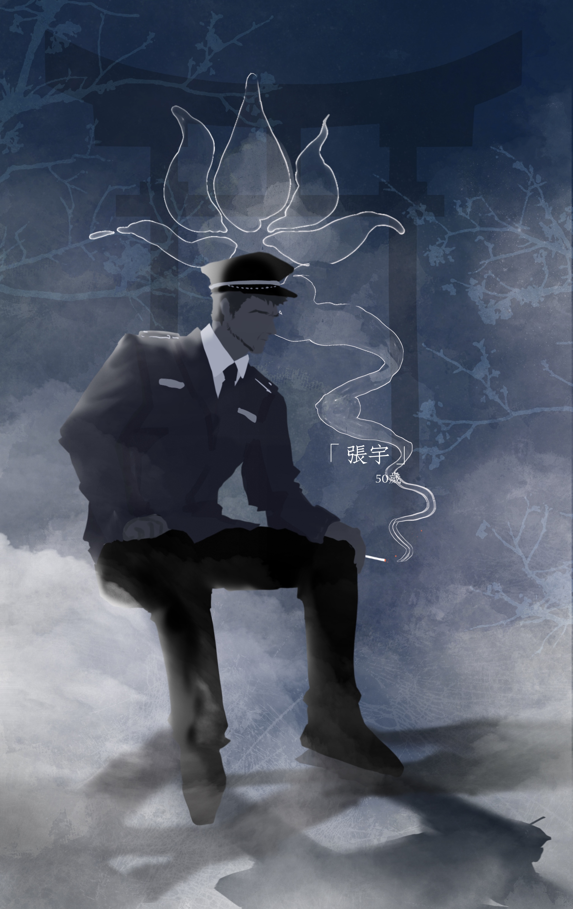
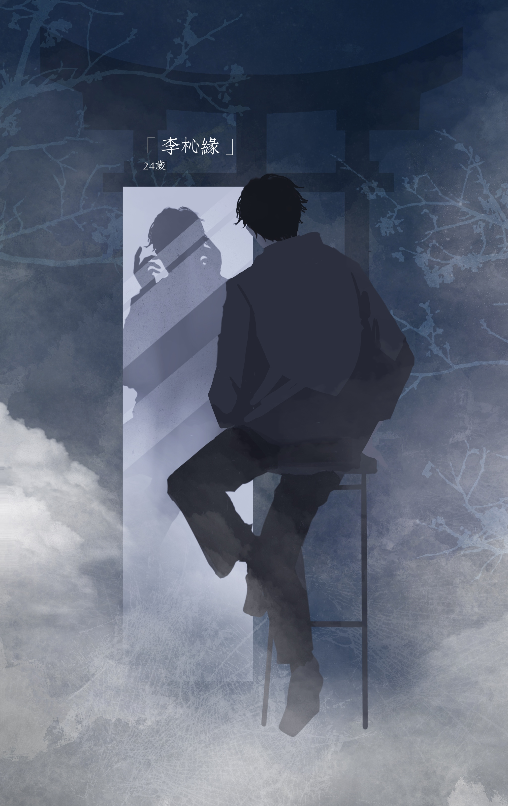
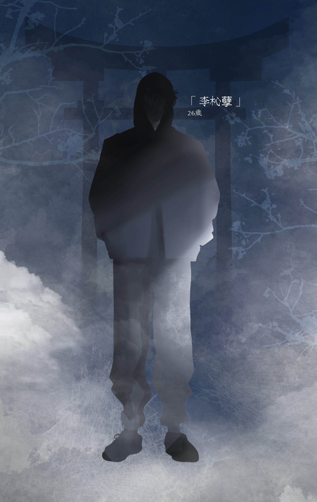
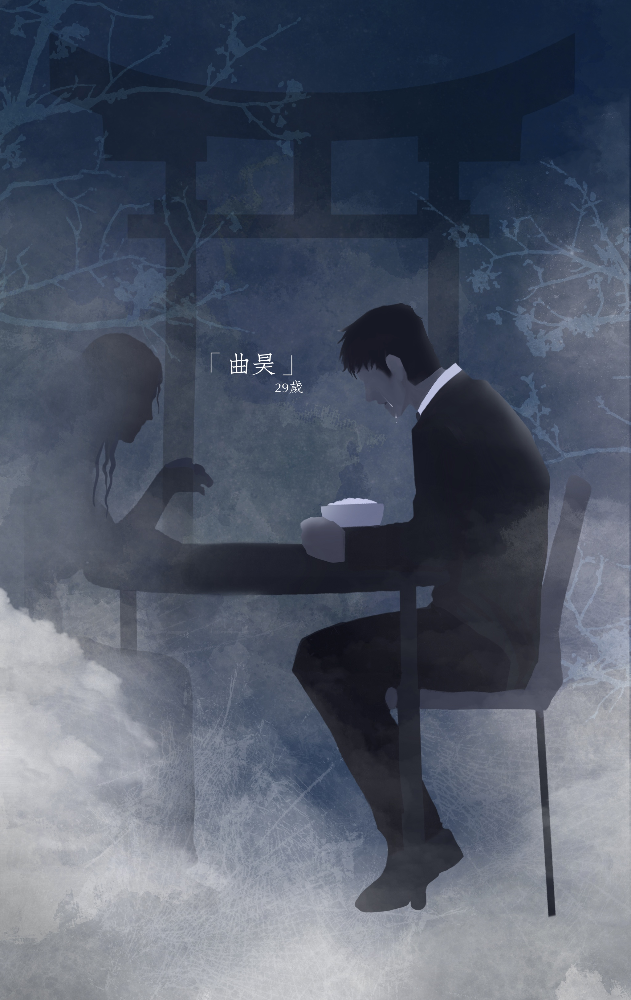

Three scripts, three worlds
I was commissioned to create character illustrations and cover art for three murder mystery games. In this genre, players step into a character for an evening, making first impressions especially important. Each character card needed to communicate not only who a person was, but also their era, social role, and the narrative tension surrounding them — inviting players into the story before the game had even begun.
The three scripts spanned very different tones — one a period romance, two modern detective thrillers — but each needed a cohesive cast that felt like it came from one world, with a cover strong enough to set the mood the moment players opened the box.
A face you can read before the first clue
For each script I started from the characters' roles in the story — their status, secrets, and relationships — and translated those into visual cues: costume, palette, posture, and expression. In a murder mystery, players form impressions instantly, so I leaned on silhouette and color to make each character distinct and memorable, while keeping every card in a cast visually consistent.
"Each character had to feel like a stranger with a story — familiar enough to inhabit, mysterious enough to suspect."
— Design intentNineteen characters, three casts
A fantasy royal romance rendered in soft, painterly tones — mirrors, blossoms, and flowing hanfu woven into a world of longing, secrets, and intertwined fates. The project included six character cards, along with front and back cover illustrations.



A modern mystery thriller built around six characters trapped in their own emotional swamps. Dark, desaturated tones and heavy shadows reflect their guilt, resentment, and hidden desires, while a single thread of light hints at the hope they cannot fully abandon. The project included six character cards and a cover illustration.






A character-driven mystery thriller built around long-buried secrets and relationships shaped by time. Rather than relying on a single visual motif, the focus was on giving each character a distinct presence while hinting at the hidden motives and histories that connect them. The project included seven character cards.







Need characters brought to life?
This was one of several illustration commissions. Reach out to see more character and visual work, or to talk about a project.
Get in touch ↗ ← Back to portfolio